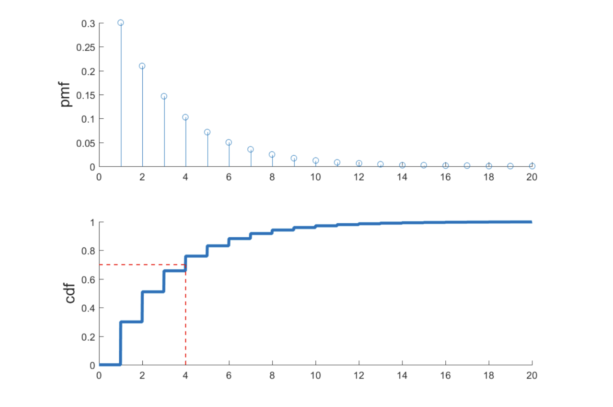
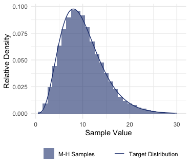

Monte Carlo Integration
The Algorithm
Properties of Monte Carlo
Accuracy Measures
Inversion Sampling
Inversion with Discrete Variables
General Inversion Sampling
Transformation Sampling
Sampling Gaussians
Rejection Sampling
How it works
The Algorithm
Rejection Sampling Without Normalization
Importance Sampling
Properties of the Importance Estimator
Choice of the Proposal Distribution
Exponentially Tilted Proposals for Rare Events
Normalized Importance Sampling
Markov Chain Monte Carlo
Reversible Markov Chains
The MCMC Estimator
Metropolis-Hastings Algorithm
Credits and References
Proof:
Unbiasedness is immediate from linearity of the expectation.
Consistency is the strong law of large numbers applied to as the sample mean of .
Proof of unbiasedness is just a standard proof that the sample variance is unbiased estimator of the population variance .
Suppose is discrete with pmf .
A natural way of sampling is by dividing into segments equal to
Having those segments, we then sample a point, and if it falls in the segment representing , return .
To formulate the idea into an algorithm, let the cdf of be , and define its “inverse” as That is, stepping along , stopping as soon as exceeds (the horizontal red line). This function essentially finds which segment falls into. 
The Inversion sampling algorithm simulates discrete by:
The algorithm in the previous section is a special case of inversion sampling–finding some inverse of the cdf, then plug a variable into it.
This method works for invertible cdf : with , setting gives , a sample from the distribution.
Proof: for any sample , Hence .
For more general distributions, is not one-to-one: it might be stationary in some places, or even be a step function (special case when is discrete).
The generalized inverse of is : which is well-defined even for discrete and/or non-strictly increasing cdfs.
With the generalized inverse, still follows .
Proof: note that by monotonicity of . Then Hence .
1D Gaussians: if , then . Hence the algorithm for sampling is:
Multivariate Gaussians: if contains independent 1D Gaussians, then , where is the covariance matrix.
Hence the algorithm to simulate is:
The rejection sampling algorithm simulates by:
In each iteration, the proposal is accepted with probability .
Proof: assuming (at least where ), where integrates to .
Proof: at each iteration, is accepted with probability then summing over the iterations on which is accepted, Hence .
Proof: let be the respective cdf of the target and proposal.
At each iteration, the cdf of is where is the distribution of , conditioning on . Again, summing over the iterations on which is accepted, Hence .
Proof: strong law of large numbers applied to , the sample average of .
Proof: in the expression above, and the other term is also finite, as by definition.
Proof: note that due to strong law of large numbers, the numerator is an unbiased and consistent estimator of , and the denominator of .
Consistency follows from the above fact (proof not examinable), where the normalizing cancel out in the limit.
Unbiasedness is because ratio-of-unbiased-estimators is not an unbiased-estimator-of-ratio in general, in this case: when the sample size is finite.
Big idea: reversible chains satisfy the detailed balance equations. Given a distribution , those equations help find a transition matrix that has as a stationary distribution.
Suppose has stationary distribution .
Its reversed chain is . If started from its stationary distribution , then is also a Markov chain.
The chain with a reverse is reversible (wrt. ) if for any from the sample space, That is, the chain and its reverse are indistinguishable if they start from the same distribution.
Equivalently, for all states .
Also equivalently, if has stationary distribution , it is reversible if it satisfies the detailed balance condition: That is, the flow from state into state () equals the reverse flow ().
Detailed balance implies stationarity (global balance): if any distribution satisfies the detailed balance , then is a stationary distribution of .
Proof: summing over gives . In matrix/vector form, it is .
Big idea: given a suitable Markov chain, MCMC gives a consistent though biased estimate.
Given samples from a Markov chain , MCMC estimator for is the sample average
Convergence to the stationary distribution: recall from A8 that if the irreducible and aperiodic has stationary distribution , then for any initial distribution, , as ,
Consistency of MCMC: if the transition matrix has the target distribution as a stationary distribution, then , and by strong law of large numbers, is consistent: However, MCMC is biased for any finite .
In MCMC, the Markov chain needs a burn-in phase to converge, during which the samples are not representative of the target : The burn-in phase can be long (e.g. ), so it is common to discard those burn-in samples and estimate from the more representative remainder:
Big idea: Metropolis-Hastings indirectly simulates the suitable Markov chain that converges to the target distribution.
Metropolis-Hastings indirectly simulates the transition by rejection sampling: a proposal distribution gives the next state, which is accepted/rejected: where the current state is carried over if the proposal is rejected.
The proposal distribution in M-H is like a Markov chain, providing the probability of going from state to state : where a good proposal should be irreducible (so every state gets a chance to be sampled), and the simplest would be the uniform .
As in rejection sampling, there is a acceptance probability: and the key is to choose the acceptance probability that simulates the suitable Markov chain, namely the chain that has the target as a stationary distribution.
This algorithm simulates the Markov chain with transition matrix given by $$\begin{align*}
P_{ij}&= \mathbb{P}[X_{k+1}=j,|,X_{k}=i]\[0.2em]
& \begin{split}
{}=\mathbb{P}[X_{k+1}&=j \text{ proposed & accepted},|,X_{k}=i]\&+\mathbb{1}{i=j}\cdot\mathbb{P}[\text{rejection},|, X{k}=i]
\end{split}\[0.2em]&= q(j|i)A_{ij}+\mathbb{1}{i=j}\left(1- \sum{k \in I}q(k|i)A_{ik} \right)
\end{align*}$$
To find the suitable , recall that the detailed balance equations are sufficient for stationarity, so and should satisfy: (assuming ) and it is easy to verify that the following is a valid () probability that satisfies the equation: where if , then , and vice versa (but with the inverse of the fraction).
With these quantites, the Metropolis-Hastings Algorithm simulates with by:
For application in MCMC, let be the samples from by Metropolis-Hastings to simulate .
Implementation of M-H in R:
p <- partial(dchisq, df=10)
q <- function(xt){runif(1, min=xt-1, max=xt+1)}
q_density <- function(from, to){1/2}
accept <- function(prev, proposed){
U <- runif(1)
fraction1 <- p(proposed)/p(prev)
fraction2 <- q_density(proposed, prev) / q_density(prev, proposed)
accept_prob <- min(1, fraction1 * fraction2)
return(U < accept_prob)
}
n <- 100000
previous_state <- 1
for (i in 1:n){
proposal <- q(previous_state)
accepted <- accept(previous_state, proposal)
if (accepted){
previous_state <- proposal
samples[i] <- proposal
} else {
samples[i] <- previous_state
}
}
burnin_removed <- samples[n_burn_in:n]
